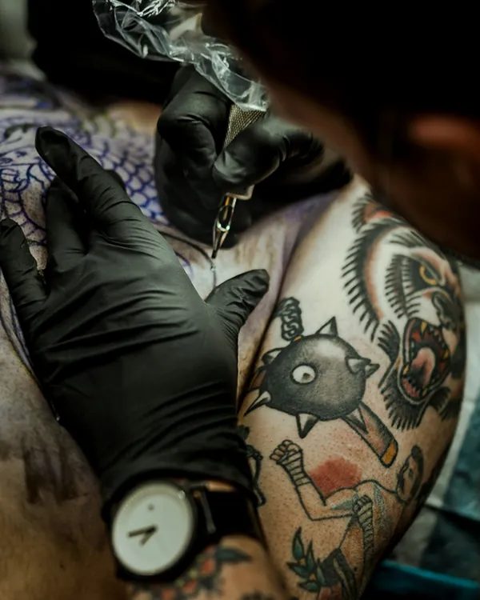
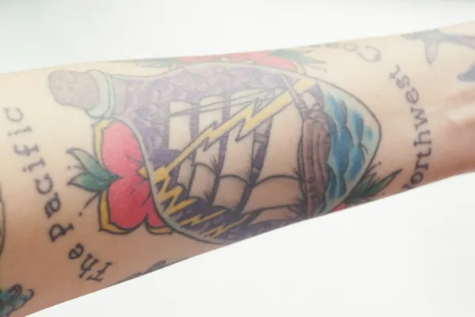
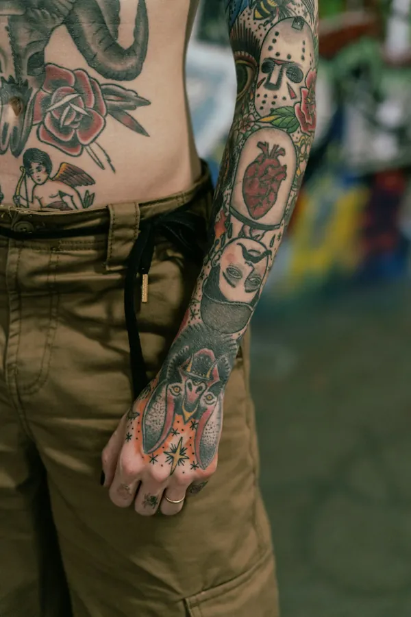
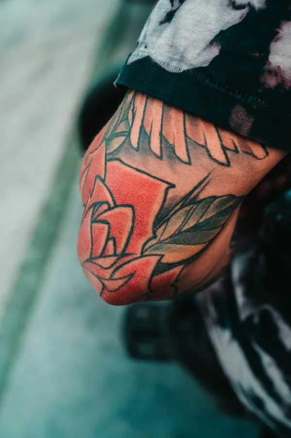

Portfólio
Tatuagens
Tatuagens
Feitas
Trabalhos já finalizados, direto da pele. Old school, tradicional americano e preto e cinza.

2026
Andorinha, cobra e rosas

2026
Faixa e chamas

2026
Martelo e caveira

2026
Tenda e fogueira

2026
Braço fechado

2026
Caveira e microfone

2026
Fortune and Glory

2026
Rosa na perna

2026
Sessão em andamento

2026
Navio na garrafa

2026
Braço e mão fechados

2026
Rosa no cotovelo